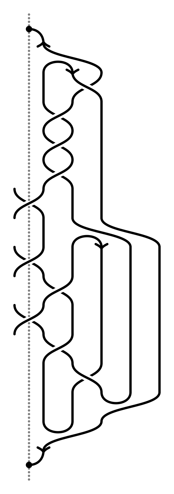

show all invariants|show all metadata
Input data and context

% second violation
s.r1.x2.y1.y1.y1.y0.r2.y0.y1.y0.y1.x2.u3.u1
,1
% Simplifies with options '-qs' to l0.x1.l2.y1.l3.y2.y2.y1.l4.y3.y2.y2.y1.y3.y2.x4.x3.y0.y1.y1.u2.y0.y1.y2.x3.y5.u4.y1.y1.y2.y0.y1.y3.y2.y2.y1.y3.y2.y2.y1.y3.y2.y2.x0.u1.y1.y0
Bar-Natan multicurve \(\mathrm{\widetilde{BN}}(T)\)
options -c0-qs
(diagram)
(metadata)
% file 'examples/check/ce2/cxBNr-c0-qs', generated by kht++ 0.1 on Mon Nov 16 17:29:01 2026 UTC
1) h^ 0 q^ -8 δ^ -4 ⬮~~(-S)~>⬯—>⬯~>⬮—>⬮<~⬯<—⬯<~⬮<—
2) h^ -5 q^-16 δ^ -3 ⬮~~(-S)~>⬯—>⬯~>⬮—>⬮<~⬯<—⬯<~⬮<—
3) h^ -3 q^-12 δ^ -3 ⬮~~(-S)~>⬯—>⬯~>⬮—>⬮<~⬯<—⬯<~⬮<—
4) h^ -6 q^-16 δ^ -2 ⬮~~(-S)~>⬯—>⬯~>⬮—>⬮<~⬯<—⬯<~⬮<—
5) h^ -4 q^-12 δ^ -2 ⬮~~(-S)~>⬯—>⬯~>⬮—>⬮<~⬯<—⬯<~⬮<—
6) h^-11 q^-24 δ^ -1 ⬮~~(-S)~>⬯—>⬯~>⬮—>⬮<~⬯<—⬯<~⬮<—
7) h^ -9 q^-20 δ^ -1 ⬮~~(-S)~>⬯—>⬯~>⬮—>⬮<~⬯<—⬯<~⬮<—
8) h^ -3 q^-14 δ^ -4 ⬮~~(-S)~>⬯—>⬯~>⬯—>⬯~>⬮—>⬮<~⬯<—⬯<~⬯<—⬯<~⬮<—
9) h^ -7 q^-20 δ^ -3 ⬮~~(-S)~>⬯—>⬯~>⬯—>⬯~>⬮—>⬮<~⬯<—⬯<~⬯<—⬯<~⬮<—
10) h^ -4 q^-14 δ^ -3 ⬮~~(-S)~>⬯—>⬯~>⬯—>⬯~>⬮—>⬮<~⬯<—⬯<~⬯<—⬯<~⬮<—
11) h^ -2 q^-10 δ^ -3 ⬮~~(-S)~>⬯—>⬯~>⬯—>⬯~>⬮—>⬮<~⬯<—⬯<~⬯<—⬯<~⬮<—
12) h^ -9 q^-22 δ^ -2 ⬮~~(-S)~>⬯—>⬯~>⬯—>⬯~>⬮—>⬮<~⬯<—⬯<~⬯<—⬯<~⬮<—
13) h^ -7 q^-18 δ^ -2 ⬮~~(-S)~>⬯—>⬯~>⬯—>⬯~>⬮—>⬮<~⬯<—⬯<~⬯<—⬯<~⬮<—
14) h^-15 q^-30 δ^ 0 ⬮~~(-S)~>⬯—>⬯~>⬯—>⬯~>⬮—>⬮<~⬯<—⬯<~⬯<—⬯<~⬮<—
15) h^-13 q^-26 δ^ 0 ⬮~~(-S)~>⬯—>⬯~>⬯—>⬯~>⬮—>⬮<~⬯<—⬯<~⬯<—⬯<~⬮<—
16) h^ -8 q^-23 δ^-7/2 ⬯——D—>⬯~>⬯—>⬯~>⬯—>⬯~>⬯—>⬯~>⬮<—⬮~>⬯—>⬯~>⬯—>⬯~>⬮—>⬮<~⬯<—⬯<~⬮—>⬮<~⬯<—⬯<~⬯<—⬯<~⬯<—⬯<~⬮<—⬮~>⬯—>⬯~>⬯—>⬯~>⬮
Khovanov multicurve \(\mathrm{\widetilde{Kh}}(T)\)
options -c0-qs
(diagram)
(metadata)
% file 'examples/check/ce2/cxKhr-c0-qs', generated by kht++ 0.1 on Mon Nov 16 17:29:01 2026 UTC
1) h^ -1 q^ -9 δ^-7/2 ⬮~~(-S)~>⬯—>⬯~>⬮—>⬮<~⬯<—⬯<~⬮<— s2(∞) q^-6 δ_^-4
2) h^ 0 q^ -7 δ^-7/2 ⬮~~(-S)~>⬯—>⬯~>⬮—>⬮<~⬯<—⬯<~⬮<— s2(∞) q^-4 δ_^-4
3) h^ 1 q^ -5 δ^-7/2 ⬮~~(-S)~>⬯—>⬯~>⬮—>⬮<~⬯<—⬯<~⬮<— s2(∞) q^-2 δ_^-4
4) h^ -6 q^-17 δ^-5/2 ⬮~~(-S)~>⬯—>⬯~>⬮—>⬮<~⬯<—⬯<~⬮<— s2(∞) q^-14 δ_^-3
5) h^ -5 q^-15 δ^-5/2 ⬮~~(-S)~>⬯—>⬯~>⬮—>⬮<~⬯<—⬯<~⬮<— s2(∞) q^-12 δ_^-3
6) h^ -4 q^-13 δ^-5/2 ⬮~~(-S)~>⬯—>⬯~>⬮—>⬮<~⬯<—⬯<~⬮<— s2(∞) q^-10 δ_^-3
7) h^ -3 q^-11 δ^-5/2 ⬮~~(-S)~>⬯—>⬯~>⬮—>⬮<~⬯<—⬯<~⬮<— s2(∞) q^-8 δ_^-3
8) h^ -7 q^-17 δ^-3/2 ⬮~~(-S)~>⬯—>⬯~>⬮—>⬮<~⬯<—⬯<~⬮<— s2(∞) q^-14 δ_^-2
9) h^ -6 q^-15 δ^-3/2 ⬮~~(-S)~>⬯—>⬯~>⬮—>⬮<~⬯<—⬯<~⬮<— s2(∞) q^-12 δ_^-2
10) h^ -5 q^-13 δ^-3/2 ⬮~~(-S)~>⬯—>⬯~>⬮—>⬮<~⬯<—⬯<~⬮<— s2(∞) q^-10 δ_^-2
11) h^ -4 q^-11 δ^-3/2 ⬮~~(-S)~>⬯—>⬯~>⬮—>⬮<~⬯<—⬯<~⬮<— s2(∞) q^-8 δ_^-2
12) h^-12 q^-25 δ^-1/2 ⬮~~(-S)~>⬯—>⬯~>⬮—>⬮<~⬯<—⬯<~⬮<— s2(∞) q^-22 δ_^-1
13) h^-11 q^-23 δ^-1/2 ⬮~~(-S)~>⬯—>⬯~>⬮—>⬮<~⬯<—⬯<~⬮<— s2(∞) q^-20 δ_^-1
14) h^-10 q^-21 δ^-1/2 ⬮~~(-S)~>⬯—>⬯~>⬮—>⬮<~⬯<—⬯<~⬮<— s2(∞) q^-18 δ_^-1
15) h^ -9 q^-19 δ^-1/2 ⬮~~(-S)~>⬯—>⬯~>⬮—>⬮<~⬯<—⬯<~⬮<— s2(∞) q^-16 δ_^-1
16) h^ -4 q^-15 δ^-7/2 ⬮~~(-S)~>⬯—>⬯~>⬯—>⬯~>⬮—>⬮<~⬯<—⬯<~⬯<—⬯<~⬮<— s4(∞) q^-10 δ_^-4
17) h^ -3 q^-13 δ^-7/2 ⬮~~(-S)~>⬯—>⬯~>⬯—>⬯~>⬮—>⬮<~⬯<—⬯<~⬯<—⬯<~⬮<— s4(∞) q^-8 δ_^-4
18) h^ -2 q^-11 δ^-7/2 ⬮~~(-S)~>⬯—>⬯~>⬯—>⬯~>⬮—>⬮<~⬯<—⬯<~⬯<—⬯<~⬮<— s4(∞) q^-6 δ_^-4
19) h^ -8 q^-21 δ^-5/2 ⬮~~(-S)~>⬯—>⬯~>⬯—>⬯~>⬮—>⬮<~⬯<—⬯<~⬯<—⬯<~⬮<— s4(∞) q^-16 δ_^-3
20) h^ -7 q^-19 δ^-5/2 ⬮~~(-S)~>⬯—>⬯~>⬯—>⬯~>⬮—>⬮<~⬯<—⬯<~⬯<—⬯<~⬮<— s4(∞) q^-14 δ_^-3
21) h^ -6 q^-17 δ^-5/2 ⬮~~(-S)~>⬯—>⬯~>⬯—>⬯~>⬮—>⬮<~⬯<—⬯<~⬯<—⬯<~⬮<— s4(∞) q^-12 δ_^-3
22) h^ -5 q^-15 δ^-5/2 ⬮~~(-S)~>⬯—>⬯~>⬯—>⬯~>⬮—>⬮<~⬯<—⬯<~⬯<—⬯<~⬮<— s4(∞) q^-10 δ_^-3
23) h^ -4 q^-13 δ^-5/2 ⬮~~(-S)~>⬯—>⬯~>⬯—>⬯~>⬮—>⬮<~⬯<—⬯<~⬯<—⬯<~⬮<— s4(∞) q^-8 δ_^-3
24) h^ -3 q^-11 δ^-5/2 ⬮~~(-S)~>⬯—>⬯~>⬯—>⬯~>⬮—>⬮<~⬯<—⬯<~⬯<—⬯<~⬮<— s4(∞) q^-6 δ_^-3
25) h^ -2 q^ -9 δ^-5/2 ⬮~~(-S)~>⬯—>⬯~>⬯—>⬯~>⬮—>⬮<~⬯<—⬯<~⬯<—⬯<~⬮<— s4(∞) q^-4 δ_^-3
26) h^-10 q^-23 δ^-3/2 ⬮~~(-S)~>⬯—>⬯~>⬯—>⬯~>⬮—>⬮<~⬯<—⬯<~⬯<—⬯<~⬮<— s4(∞) q^-18 δ_^-2
27) h^ -9 q^-21 δ^-3/2 ⬮~~(-S)~>⬯—>⬯~>⬯—>⬯~>⬮—>⬮<~⬯<—⬯<~⬯<—⬯<~⬮<— s4(∞) q^-16 δ_^-2
28) h^ -8 q^-19 δ^-3/2 ⬮~~(-S)~>⬯—>⬯~>⬯—>⬯~>⬮—>⬮<~⬯<—⬯<~⬯<—⬯<~⬮<— s4(∞) q^-14 δ_^-2
29) h^ -7 q^-17 δ^-3/2 ⬮~~(-S)~>⬯—>⬯~>⬯—>⬯~>⬮—>⬮<~⬯<—⬯<~⬯<—⬯<~⬮<— s4(∞) q^-12 δ_^-2
30) h^-16 q^-31 δ^ 1/2 ⬮~~(-S)~>⬯—>⬯~>⬯—>⬯~>⬮—>⬮<~⬯<—⬯<~⬯<—⬯<~⬮<— s4(∞) q^-26 δ_^0
31) h^-15 q^-29 δ^ 1/2 ⬮~~(-S)~>⬯—>⬯~>⬯—>⬯~>⬮—>⬮<~⬯<—⬯<~⬯<—⬯<~⬮<— s4(∞) q^-24 δ_^0
32) h^-14 q^-27 δ^ 1/2 ⬮~~(-S)~>⬯—>⬯~>⬯—>⬯~>⬮—>⬮<~⬯<—⬯<~⬯<—⬯<~⬮<— s4(∞) q^-22 δ_^0
33) h^-13 q^-25 δ^ 1/2 ⬮~~(-S)~>⬯—>⬯~>⬯—>⬯~>⬮—>⬮<~⬯<—⬯<~⬯<—⬯<~⬮<— s4(∞) q^-20 δ_^0
34) h^ -5 q^-15 δ^-5/2 ⬮~~(-S)~>⬯—>⬯~>⬯—>⬯~>⬯—>⬯~>⬮—>⬮<~⬯<—⬯<~⬯<—⬯<~⬯<—⬯<~⬮<— s6(∞) q^-8 δ_^-3
35) h^ -9 q^-24 δ^ -3 ⬯~~(-S^2)~>⬯—>⬯~>⬯—>⬯~>⬯—>⬯~>⬯—>⬯~>⬮<—⬮<~⬯<—⬯<~⬯<—⬯<~⬯<—⬯<~⬯<— r(8) q^-136/9 δ|^-7/2